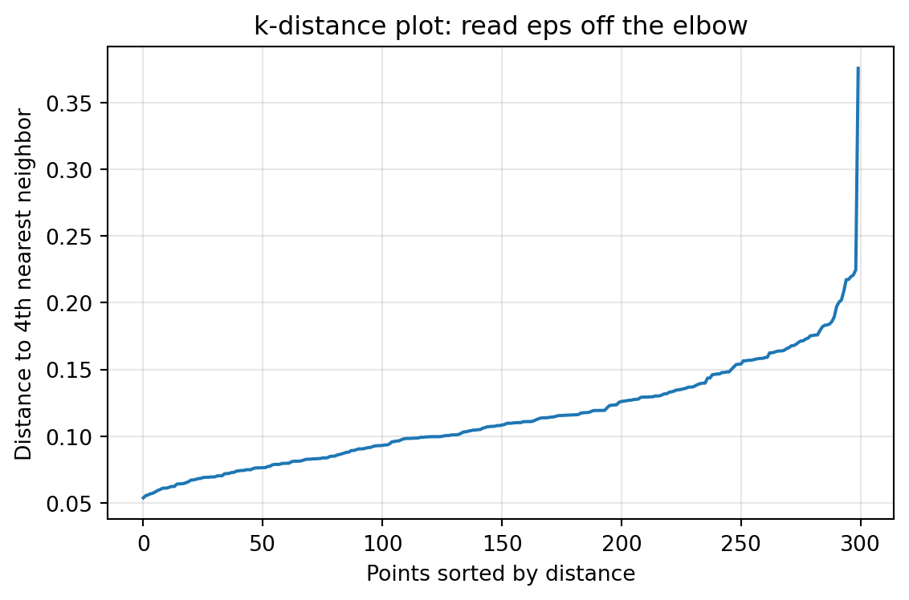
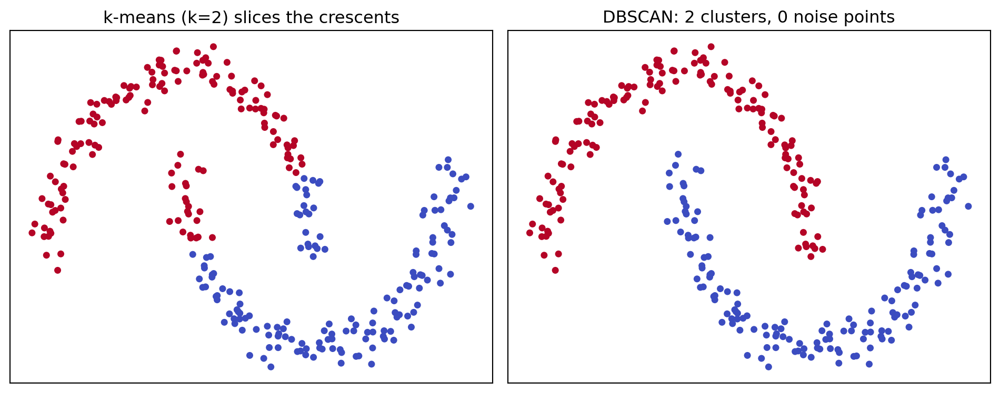

Most introductory treatments of clustering begin with \(k\)-means, a method that partitions data by minimizing within cluster variance around a fixed number of centroids. That approach carries hidden assumptions. It expects clusters to be roughly spherical, comparably sized, and specified in advance through the parameter \(k\). When data violate these assumptions, as they frequently do in spatial analysis, anomaly detection, and exploratory data mining, centroid based methods fail in ways that are hard to diagnose. Density-Based Spatial Clustering of Applications with Noise, introduced by Ester, Kriegel, Sander, and Xu in 1996, takes a fundamentally different view. It treats clusters as regions of high point density separated by regions of low density, and it labels sparse points as noise rather than forcing every observation into a group. This chapter develops the formal machinery of DBSCAN, examines its two governing parameters, and assesses where it excels and where it breaks down.
132.1 1. The Density Intuition
The central idea is deceptively simple. A cluster is a dense neighborhood of points, and the boundary between clusters is a region where density drops off. Rather than modeling clusters as geometric shapes, DBSCAN models them as connected components of a density graph. Two points belong to the same cluster if you can walk from one to the other by stepping only through sufficiently crowded neighborhoods.
This perspective gives DBSCAN three properties that distinguish it from partition based methods. First, it discovers the number of clusters automatically from the data, so there is no need to supply \(k\). Second, it can recover clusters of arbitrary shape, including elongated, nested, or curved structures that no centroid can summarize. Third, it has an explicit notion of noise, so outliers are identified and set aside instead of being absorbed into the nearest cluster. These properties follow directly from the density formulation, and understanding them requires the formal definitions below.
132.2 2. Formal Definitions
DBSCAN depends on two parameters that together define what “dense” means: a radius \(\varepsilon\) (often written eps) and a minimum count \(\text{minPts}\). All subsequent definitions are built from these two quantities.
132.2.1 2.1 The Epsilon Neighborhood
For a point \(p\) in a dataset \(D\) equipped with a distance function \(\text{dist}\), the \(\varepsilon\)-neighborhood is the set of points within radius \(\varepsilon\):
The neighborhood includes \(p\) itself. The choice of distance function matters. Euclidean distance is the default, but DBSCAN works with any metric, including Manhattan distance, cosine distance on normalized vectors, or great circle distance on geographic coordinates.
132.2.2 2.2 Core, Border, and Noise Points
The cardinality of the neighborhood classifies every point into one of three categories.
A point \(p\) is a core point if its neighborhood contains at least \(\text{minPts}\) points:
\[|N_\varepsilon(p)| \ge \text{minPts}.\]
Core points sit in the dense interior of a cluster. They are the engine of cluster growth.
A point \(q\) is a border point if it is not itself a core point but falls within the neighborhood of some core point. Border points lie at the fringe of a cluster. They are close enough to a dense region to belong to it, but their own neighborhoods are too sparse to drive further expansion.
A point that is neither a core point nor a border point is a noise point. Noise points occupy low density regions and are not assigned to any cluster. This explicit treatment of noise is the “N” in DBSCAN and a major reason the algorithm is favored for outlier sensitive applications.
132.2.3 2.3 Reachability and Connectivity
The category labels are stitched into clusters through three relational definitions.
A point \(q\) is directly density reachable from \(p\) if \(p\) is a core point and \(q \in N_\varepsilon(p)\). Note the asymmetry. If \(q\) is a border point, then \(q\) is directly density reachable from the core point \(p\), but \(p\) is generally not directly density reachable from \(q\), because \(q\) lacks the core property needed to reach anything.
A point \(q\) is density reachable from \(p\) if there exists a chain of points \(p = p_1, p_2, \ldots, p_n = q\) such that each \(p_{i+1}\) is directly density reachable from \(p_i\). This is the transitive closure of direct reachability over core points. It is the mechanism that lets a cluster snake along an arbitrary shape: each step stays inside a dense neighborhood, but the cumulative path can curve freely.
Density reachability is still asymmetric because of border points, so DBSCAN introduces a symmetric notion. Two points \(p\) and \(q\) are density connected if there exists a core point \(o\) from which both \(p\) and \(q\) are density reachable. A DBSCAN cluster is then defined formally as a maximal set of density connected points. Equivalently, a cluster is a non empty subset \(C \subseteq D\) satisfying two conditions: maximality, meaning if \(p \in C\) and \(q\) is density reachable from \(p\) then \(q \in C\); and connectivity, meaning any two points in \(C\) are density connected.
132.3 3. The Algorithm
The procedure visits each point once, expanding clusters outward from core points and quarantining noise. The structure below captures the canonical formulation.
DBSCAN(D, eps, minPts):
label every point as UNVISITED
C = 0 # cluster counter
for each point p in D:
if p is VISITED: continue
mark p VISITED
Neighbors = regionQuery(p, eps)
if |Neighbors| < minPts:
label p as NOISE # may be revised later
else:
C = C + 1
expandCluster(p, Neighbors, C, eps, minPts)
The expansion step grows the current cluster by absorbing density reachable points.
expandCluster(p, Neighbors, C, eps, minPts):
assign p to cluster C
i = 0
while i < len(Neighbors):
q = Neighbors[i]
if q is NOISE:
assign q to cluster C # border point rescued from noise
if q is UNVISITED:
mark q VISITED
qNeighbors = regionQuery(q, eps)
if |qNeighbors| >= minPts: # q is a core point
Neighbors = Neighbors + qNeighbors
assign q to cluster C if not already assigned
i = i + 1
Two subtleties deserve emphasis. A point first labeled NOISE can be reclassified as a border point when a later expansion reaches it, which is why the noise label is provisional during the scan. Conversely, a genuine border point that lies in the neighborhoods of two different clusters is assigned to whichever cluster reaches it first. This makes the output mildly dependent on point ordering for border points, although core point membership and the overall cluster structure are deterministic.
132.4 4. Complexity and Indexing
The cost of DBSCAN is dominated by the neighborhood queries. Each point triggers one regionQuery, and the running time is
\[O(n \cdot Q),\]
where \(n\) is the number of points and \(Q\) is the cost of a single neighborhood query. With no spatial index, a query is a linear scan over all points, giving \(O(n^2)\) overall. With a spatial index such as a k-d tree, ball tree, or R*-tree, the average query cost drops to roughly \(O(\log n)\) in low dimensions, yielding \(O(n \log n)\) total. This is the regime in which DBSCAN scales to large spatial datasets.
The benefit of indexing erodes as dimensionality grows. Tree based indices degrade toward linear scan behavior in high dimensional spaces because of the curse of dimensionality, so the \(O(n \log n)\) promise applies mainly to data with a modest number of features. Memory cost is \(O(n)\) for the labels, although storing the full neighbor lists during expansion can raise the constant factor.
132.5 5. Choosing the Parameters
DBSCAN removes the burden of choosing \(k\) but replaces it with the joint choice of \(\varepsilon\) and \(\text{minPts}\). These parameters interact, and poor choices produce either one giant cluster that swallows everything or a fragmented field of noise.
132.5.1 5.1 Setting minPts
The parameter \(\text{minPts}\) controls the minimum density required to form a cluster and how aggressively the algorithm rejects noise. A common heuristic sets
\[\text{minPts} \ge d + 1,\]
where \(d\) is the dimensionality of the data, with \(\text{minPts} = 2d\) often recommended as a practical default for datasets of moderate size. Larger values produce more significant clusters and tolerate more noise, which is useful when data are noisy or large. Smaller values let thin or small clusters survive but admit more spurious structure. A floor of \(\text{minPts} = 3\) is sensible because \(\text{minPts} = 1\) makes every point its own cluster and \(\text{minPts} = 2\) reduces DBSCAN to single linkage hierarchical clustering.
132.5.2 5.2 Setting Epsilon with the k-Distance Plot
Once \(\text{minPts}\) is fixed at some value \(k\), the radius \(\varepsilon\) can be chosen from a \(k\)-distance plot. For each point compute the distance to its \(k\)-th nearest neighbor, sort these distances in ascending order, and plot them. Points inside dense clusters have small \(k\)-distances, while noise points have large ones. The curve typically rises gently and then bends sharply upward at the transition from cluster points to noise. The distance at this “knee” or “elbow” is a good candidate for \(\varepsilon\).
Code
# k-distance plot to guide eps selectionimport numpy as npimport matplotlib.pyplot as pltfrom sklearn.datasets import make_moonsfrom sklearn.neighbors import NearestNeighborsfrom sklearn.preprocessing import StandardScalerX_raw, _ = make_moons(n_samples=300, noise=0.06, random_state=42)X = StandardScaler().fit_transform(X_raw)k =2* X.shape[1] # minPts heuristicnn = NearestNeighbors(n_neighbors=k).fit(X)distances, _ = nn.kneighbors(X)kth = np.sort(distances[:, -1]) # distance to k-th neighbor, sortedfig, ax = plt.subplots(figsize=(6, 4))ax.plot(kth)ax.set_xlabel("Points sorted by distance")ax.set_ylabel(f"Distance to {k}th nearest neighbor")ax.set_title("k-distance plot: read eps off the elbow")ax.grid(True, alpha=0.3)plt.tight_layout()plt.show()

The elbow is a guide, not an oracle. Domain knowledge about meaningful spatial scale, the units of the features, and the intended granularity of clusters should temper the purely geometric reading. Because distances depend on feature scale, standardizing or normalizing features before clustering is usually essential, since otherwise a single high variance feature dominates the metric.
132.6 6. Finding Arbitrary Shaped Clusters
The defining strength of DBSCAN is its ability to recover clusters that are not convex. Consider the classic two moons dataset, two interleaving crescent shapes. A centroid method places one centroid in each crescent and then assigns points to the nearer centroid, which slices both crescents in half along the perpendicular bisector and produces nonsense. DBSCAN instead follows the density ridge along each crescent. Because density reachability chains through local neighborhoods, the cluster can bend around the curve without ever requiring the global shape to be compact.
The same mechanism handles concentric rings, spirals, and elongated filaments common in geospatial and astronomical data. It also explains why cluster count emerges naturally: the number of clusters equals the number of density connected components, which the data determine rather than the analyst. This is a qualitatively different contract than \(k\)-means offers, and it is the reason DBSCAN remains a default tool for spatial pattern discovery in geographic information systems, image segmentation, and trajectory analysis.
132.7 7. Strengths
The advantages of DBSCAN cluster into a few themes. It requires no prior specification of the number of clusters, which removes a notoriously fragile modeling choice. It recovers clusters of arbitrary shape, succeeding precisely where convex methods fail. It has a principled, built in notion of noise, making it robust to outliers and well suited to anomaly detection. It is deterministic with respect to core points and cluster structure, so repeated runs on the same data with the same parameters produce essentially the same partition, unlike the random initialization of \(k\)-means. Finally, with spatial indexing it scales to large low dimensional datasets at \(O(n \log n)\), which is attractive for the spatial workloads it was designed for.
132.8 8. Weaknesses
The limitations are equally important and follow from the same density model.
132.8.1 8.1 Varying Density
DBSCAN uses a single global \(\varepsilon\) and a single global \(\text{minPts}\). When the true clusters have substantially different densities, no single radius works. A radius large enough to connect a sparse cluster will merge nearby dense clusters into one, while a radius tuned for the dense clusters will shatter the sparse cluster into noise. This is the most cited weakness of the algorithm and the primary motivation for its successor OPTICS, which orders points by reachability to expose clusters across a range of density scales, and for HDBSCAN, which builds a hierarchy and extracts the most stable clusters without committing to a single \(\varepsilon\).
132.8.2 8.2 High Dimensionality
In high dimensional spaces the curse of dimensionality flattens the contrast between near and far distances, so the notion of a meaningful \(\varepsilon\) neighborhood degrades. Spatial indices also lose their advantage, pushing the algorithm back toward \(O(n^2)\). DBSCAN is therefore best applied after dimensionality reduction or to data that are intrinsically low dimensional.
132.8.3 8.3 Parameter Sensitivity and Border Ambiguity
Although DBSCAN avoids choosing \(k\), the results can be sensitive to \(\varepsilon\) in particular, and the \(k\)-distance heuristic does not always present a clean elbow. In addition, border points lying between two clusters are assigned by order of discovery, introducing a small nondeterminism at cluster boundaries. The HDBSCAN refinement removes the border point ambiguity by abandoning the hard border concept altogether.
132.9 9. Practical Guidance
A workable recipe is to standardize the features, set \(\text{minPts}\) to roughly \(2d\) and not below \(3\), read \(\varepsilon\) from the elbow of the \(k\)-distance plot, then inspect the resulting noise fraction and cluster count. If almost everything is labeled noise, \(\varepsilon\) is too small or \(\text{minPts}\) too large. If one cluster dominates, \(\varepsilon\) is too large. When clusters of clearly different density are present, prefer HDBSCAN or OPTICS rather than fighting the global parameters. A minimal invocation looks like this.
Code
# DBSCAN follows the density ridge where k-means cannotimport numpy as npimport matplotlib.pyplot as pltfrom sklearn.datasets import make_moonsfrom sklearn.preprocessing import StandardScalerfrom sklearn.cluster import DBSCAN, KMeansX_raw, _ = make_moons(n_samples=300, noise=0.06, random_state=42)X = StandardScaler().fit_transform(X_raw)km_labels = KMeans(n_clusters=2, n_init=10, random_state=42).fit_predict(X)db_labels = DBSCAN(eps=0.3, min_samples=5).fit_predict(X) # label -1 marks noisen_clusters =len(set(db_labels)) - (1if-1in db_labels else0)n_noise =int(np.sum(db_labels ==-1))fig, axes = plt.subplots(1, 2, figsize=(10, 4), sharex=True, sharey=True)axes[0].scatter(X[:, 0], X[:, 1], c=km_labels, cmap="coolwarm", s=15)axes[0].set_title("k-means (k=2) slices the crescents")axes[1].scatter(X[:, 0], X[:, 1], c=db_labels, cmap="coolwarm", s=15)axes[1].set_title(f"DBSCAN: {n_clusters} clusters, {n_noise} noise points")for ax in axes: ax.set_xticks([]); ax.set_yticks([])plt.tight_layout()plt.show()print(f"DBSCAN found {n_clusters} clusters and labeled {n_noise} points as noise")

DBSCAN found 2 clusters and labeled 0 points as noise
The same density mechanism handles concentric rings, where a centroid method is equally helpless.
Treating the noise label as a first class output, rather than an inconvenience, is often where DBSCAN delivers its greatest practical value, since the points it refuses to cluster are frequently the ones worth investigating.
132.10 10. Summary
DBSCAN reframes clustering as the discovery of dense, density connected regions. Its three point categories of core, border, and noise, built from the two parameters \(\varepsilon\) and \(\text{minPts}\), let it find clusters of any shape, determine their number from the data, and isolate outliers. These same commitments make it struggle with clusters of varying density and with high dimensional data, limitations that motivated OPTICS and HDBSCAN. Understood for what it is, a local density method rather than a global partition method, DBSCAN remains one of the most useful and widely deployed clustering algorithms in practice.
132.11 References
Ester, M., Kriegel, H.-P., Sander, J., and Xu, X. (1996). A Density-Based Algorithm for Discovering Clusters in Large Spatial Databases with Noise. Proceedings of the 2nd International Conference on Knowledge Discovery and Data Mining (KDD-96), 226-231. https://www.aaai.org/Papers/KDD/1996/KDD96-037.pdf
Ankerst, M., Breunig, M. M., Kriegel, H.-P., and Sander, J. (1999). OPTICS: Ordering Points To Identify the Clustering Structure. Proceedings of the ACM SIGMOD International Conference on Management of Data, 49-60. https://dl.acm.org/doi/10.1145/304182.304187
Schubert, E., Sander, J., Ester, M., Kriegel, H.-P., and Xu, X. (2017). DBSCAN Revisited, Revisited: Why and How You Should (Still) Use DBSCAN. ACM Transactions on Database Systems, 42(3), 1-21. https://dl.acm.org/doi/10.1145/3068335
Campello, R. J. G. B., Moulavi, D., and Sander, J. (2013). Density-Based Clustering Based on Hierarchical Density Estimates. Advances in Knowledge Discovery and Data Mining (PAKDD), 160-172. https://link.springer.com/chapter/10.1007/978-3-642-37456-2_14
Pedregosa, F., et al. (2011). Scikit-learn: Machine Learning in Python. Journal of Machine Learning Research, 12, 2825-2830. https://scikit-learn.org/stable/modules/clustering.html#dbscan
Source Code
# Density-Based Clustering with DBSCANMost introductory treatments of clustering begin with $k$-means, a method that partitions data by minimizing within cluster variance around a fixed number of centroids. That approach carries hidden assumptions. It expects clusters to be roughly spherical, comparably sized, and specified in advance through the parameter $k$. When data violate these assumptions, as they frequently do in spatial analysis, anomaly detection, and exploratory data mining, centroid based methods fail in ways that are hard to diagnose. Density-Based Spatial Clustering of Applications with Noise, introduced by Ester, Kriegel, Sander, and Xu in 1996, takes a fundamentally different view. It treats clusters as regions of high point density separated by regions of low density, and it labels sparse points as noise rather than forcing every observation into a group. This chapter develops the formal machinery of DBSCAN, examines its two governing parameters, and assesses where it excels and where it breaks down.## 1. The Density IntuitionThe central idea is deceptively simple. A cluster is a dense neighborhood of points, and the boundary between clusters is a region where density drops off. Rather than modeling clusters as geometric shapes, DBSCAN models them as connected components of a density graph. Two points belong to the same cluster if you can walk from one to the other by stepping only through sufficiently crowded neighborhoods.This perspective gives DBSCAN three properties that distinguish it from partition based methods. First, it discovers the number of clusters automatically from the data, so there is no need to supply $k$. Second, it can recover clusters of arbitrary shape, including elongated, nested, or curved structures that no centroid can summarize. Third, it has an explicit notion of noise, so outliers are identified and set aside instead of being absorbed into the nearest cluster. These properties follow directly from the density formulation, and understanding them requires the formal definitions below.## 2. Formal DefinitionsDBSCAN depends on two parameters that together define what "dense" means: a radius $\varepsilon$ (often written `eps`) and a minimum count $\text{minPts}$. All subsequent definitions are built from these two quantities.### 2.1 The Epsilon NeighborhoodFor a point $p$ in a dataset $D$ equipped with a distance function $\text{dist}$, the $\varepsilon$-neighborhood is the set of points within radius $\varepsilon$:$$N_\varepsilon(p) = \{ q \in D : \text{dist}(p, q) \le \varepsilon \}.$$The neighborhood includes $p$ itself. The choice of distance function matters. Euclidean distance is the default, but DBSCAN works with any metric, including Manhattan distance, cosine distance on normalized vectors, or great circle distance on geographic coordinates.### 2.2 Core, Border, and Noise PointsThe cardinality of the neighborhood classifies every point into one of three categories.A point $p$ is a **core point** if its neighborhood contains at least $\text{minPts}$ points:$$|N_\varepsilon(p)| \ge \text{minPts}.$$Core points sit in the dense interior of a cluster. They are the engine of cluster growth.A point $q$ is a **border point** if it is not itself a core point but falls within the neighborhood of some core point. Border points lie at the fringe of a cluster. They are close enough to a dense region to belong to it, but their own neighborhoods are too sparse to drive further expansion.A point that is neither a core point nor a border point is a **noise point**. Noise points occupy low density regions and are not assigned to any cluster. This explicit treatment of noise is the "N" in DBSCAN and a major reason the algorithm is favored for outlier sensitive applications.### 2.3 Reachability and ConnectivityThe category labels are stitched into clusters through three relational definitions.A point $q$ is **directly density reachable** from $p$ if $p$ is a core point and $q \in N_\varepsilon(p)$. Note the asymmetry. If $q$ is a border point, then $q$ is directly density reachable from the core point $p$, but $p$ is generally not directly density reachable from $q$, because $q$ lacks the core property needed to reach anything.A point $q$ is **density reachable** from $p$ if there exists a chain of points $p = p_1, p_2, \ldots, p_n = q$ such that each $p_{i+1}$ is directly density reachable from $p_i$. This is the transitive closure of direct reachability over core points. It is the mechanism that lets a cluster snake along an arbitrary shape: each step stays inside a dense neighborhood, but the cumulative path can curve freely.Density reachability is still asymmetric because of border points, so DBSCAN introduces a symmetric notion. Two points $p$ and $q$ are **density connected** if there exists a core point $o$ from which both $p$ and $q$ are density reachable. A DBSCAN cluster is then defined formally as a maximal set of density connected points. Equivalently, a cluster is a non empty subset $C \subseteq D$ satisfying two conditions: maximality, meaning if $p \in C$ and $q$ is density reachable from $p$ then $q \in C$; and connectivity, meaning any two points in $C$ are density connected.## 3. The AlgorithmThe procedure visits each point once, expanding clusters outward from core points and quarantining noise. The structure below captures the canonical formulation.```textDBSCAN(D, eps, minPts): label every point as UNVISITED C = 0 # cluster counter for each point p in D: if p is VISITED: continue mark p VISITED Neighbors = regionQuery(p, eps) if |Neighbors| < minPts: label p as NOISE # may be revised later else: C = C + 1 expandCluster(p, Neighbors, C, eps, minPts)```The expansion step grows the current cluster by absorbing density reachable points.```textexpandCluster(p, Neighbors, C, eps, minPts): assign p to cluster C i = 0 while i < len(Neighbors): q = Neighbors[i] if q is NOISE: assign q to cluster C # border point rescued from noise if q is UNVISITED: mark q VISITED qNeighbors = regionQuery(q, eps) if |qNeighbors| >= minPts: # q is a core point Neighbors = Neighbors + qNeighbors assign q to cluster C if not already assigned i = i + 1```Two subtleties deserve emphasis. A point first labeled NOISE can be reclassified as a border point when a later expansion reaches it, which is why the noise label is provisional during the scan. Conversely, a genuine border point that lies in the neighborhoods of two different clusters is assigned to whichever cluster reaches it first. This makes the output mildly dependent on point ordering for border points, although core point membership and the overall cluster structure are deterministic.## 4. Complexity and IndexingThe cost of DBSCAN is dominated by the neighborhood queries. Each point triggers one `regionQuery`, and the running time is$$O(n \cdot Q),$$where $n$ is the number of points and $Q$ is the cost of a single neighborhood query. With no spatial index, a query is a linear scan over all points, giving $O(n^2)$ overall. With a spatial index such as a k-d tree, ball tree, or R*-tree, the average query cost drops to roughly $O(\log n)$ in low dimensions, yielding $O(n \log n)$ total. This is the regime in which DBSCAN scales to large spatial datasets.The benefit of indexing erodes as dimensionality grows. Tree based indices degrade toward linear scan behavior in high dimensional spaces because of the curse of dimensionality, so the $O(n \log n)$ promise applies mainly to data with a modest number of features. Memory cost is $O(n)$ for the labels, although storing the full neighbor lists during expansion can raise the constant factor.## 5. Choosing the ParametersDBSCAN removes the burden of choosing $k$ but replaces it with the joint choice of $\varepsilon$ and $\text{minPts}$. These parameters interact, and poor choices produce either one giant cluster that swallows everything or a fragmented field of noise.### 5.1 Setting minPtsThe parameter $\text{minPts}$ controls the minimum density required to form a cluster and how aggressively the algorithm rejects noise. A common heuristic sets$$\text{minPts} \ge d + 1,$$where $d$ is the dimensionality of the data, with $\text{minPts} = 2d$ often recommended as a practical default for datasets of moderate size. Larger values produce more significant clusters and tolerate more noise, which is useful when data are noisy or large. Smaller values let thin or small clusters survive but admit more spurious structure. A floor of $\text{minPts} = 3$ is sensible because $\text{minPts} = 1$ makes every point its own cluster and $\text{minPts} = 2$ reduces DBSCAN to single linkage hierarchical clustering.### 5.2 Setting Epsilon with the k-Distance PlotOnce $\text{minPts}$ is fixed at some value $k$, the radius $\varepsilon$ can be chosen from a $k$-distance plot. For each point compute the distance to its $k$-th nearest neighbor, sort these distances in ascending order, and plot them. Points inside dense clusters have small $k$-distances, while noise points have large ones. The curve typically rises gently and then bends sharply upward at the transition from cluster points to noise. The distance at this "knee" or "elbow" is a good candidate for $\varepsilon$.```{python}# k-distance plot to guide eps selectionimport numpy as npimport matplotlib.pyplot as pltfrom sklearn.datasets import make_moonsfrom sklearn.neighbors import NearestNeighborsfrom sklearn.preprocessing import StandardScalerX_raw, _ = make_moons(n_samples=300, noise=0.06, random_state=42)X = StandardScaler().fit_transform(X_raw)k =2* X.shape[1] # minPts heuristicnn = NearestNeighbors(n_neighbors=k).fit(X)distances, _ = nn.kneighbors(X)kth = np.sort(distances[:, -1]) # distance to k-th neighbor, sortedfig, ax = plt.subplots(figsize=(6, 4))ax.plot(kth)ax.set_xlabel("Points sorted by distance")ax.set_ylabel(f"Distance to {k}th nearest neighbor")ax.set_title("k-distance plot: read eps off the elbow")ax.grid(True, alpha=0.3)plt.tight_layout()plt.show()```The elbow is a guide, not an oracle. Domain knowledge about meaningful spatial scale, the units of the features, and the intended granularity of clusters should temper the purely geometric reading. Because distances depend on feature scale, standardizing or normalizing features before clustering is usually essential, since otherwise a single high variance feature dominates the metric.## 6. Finding Arbitrary Shaped ClustersThe defining strength of DBSCAN is its ability to recover clusters that are not convex. Consider the classic two moons dataset, two interleaving crescent shapes. A centroid method places one centroid in each crescent and then assigns points to the nearer centroid, which slices both crescents in half along the perpendicular bisector and produces nonsense. DBSCAN instead follows the density ridge along each crescent. Because density reachability chains through local neighborhoods, the cluster can bend around the curve without ever requiring the global shape to be compact.The same mechanism handles concentric rings, spirals, and elongated filaments common in geospatial and astronomical data. It also explains why cluster count emerges naturally: the number of clusters equals the number of density connected components, which the data determine rather than the analyst. This is a qualitatively different contract than $k$-means offers, and it is the reason DBSCAN remains a default tool for spatial pattern discovery in geographic information systems, image segmentation, and trajectory analysis.## 7. StrengthsThe advantages of DBSCAN cluster into a few themes. It requires no prior specification of the number of clusters, which removes a notoriously fragile modeling choice. It recovers clusters of arbitrary shape, succeeding precisely where convex methods fail. It has a principled, built in notion of noise, making it robust to outliers and well suited to anomaly detection. It is deterministic with respect to core points and cluster structure, so repeated runs on the same data with the same parameters produce essentially the same partition, unlike the random initialization of $k$-means. Finally, with spatial indexing it scales to large low dimensional datasets at $O(n \log n)$, which is attractive for the spatial workloads it was designed for.## 8. WeaknessesThe limitations are equally important and follow from the same density model.### 8.1 Varying DensityDBSCAN uses a single global $\varepsilon$ and a single global $\text{minPts}$. When the true clusters have substantially different densities, no single radius works. A radius large enough to connect a sparse cluster will merge nearby dense clusters into one, while a radius tuned for the dense clusters will shatter the sparse cluster into noise. This is the most cited weakness of the algorithm and the primary motivation for its successor OPTICS, which orders points by reachability to expose clusters across a range of density scales, and for HDBSCAN, which builds a hierarchy and extracts the most stable clusters without committing to a single $\varepsilon$.### 8.2 High DimensionalityIn high dimensional spaces the curse of dimensionality flattens the contrast between near and far distances, so the notion of a meaningful $\varepsilon$ neighborhood degrades. Spatial indices also lose their advantage, pushing the algorithm back toward $O(n^2)$. DBSCAN is therefore best applied after dimensionality reduction or to data that are intrinsically low dimensional.### 8.3 Parameter Sensitivity and Border AmbiguityAlthough DBSCAN avoids choosing $k$, the results can be sensitive to $\varepsilon$ in particular, and the $k$-distance heuristic does not always present a clean elbow. In addition, border points lying between two clusters are assigned by order of discovery, introducing a small nondeterminism at cluster boundaries. The HDBSCAN refinement removes the border point ambiguity by abandoning the hard border concept altogether.## 9. Practical GuidanceA workable recipe is to standardize the features, set $\text{minPts}$ to roughly $2d$ and not below $3$, read $\varepsilon$ from the elbow of the $k$-distance plot, then inspect the resulting noise fraction and cluster count. If almost everything is labeled noise, $\varepsilon$ is too small or $\text{minPts}$ too large. If one cluster dominates, $\varepsilon$ is too large. When clusters of clearly different density are present, prefer HDBSCAN or OPTICS rather than fighting the global parameters. A minimal invocation looks like this.```{python}# DBSCAN follows the density ridge where k-means cannotimport numpy as npimport matplotlib.pyplot as pltfrom sklearn.datasets import make_moonsfrom sklearn.preprocessing import StandardScalerfrom sklearn.cluster import DBSCAN, KMeansX_raw, _ = make_moons(n_samples=300, noise=0.06, random_state=42)X = StandardScaler().fit_transform(X_raw)km_labels = KMeans(n_clusters=2, n_init=10, random_state=42).fit_predict(X)db_labels = DBSCAN(eps=0.3, min_samples=5).fit_predict(X) # label -1 marks noisen_clusters =len(set(db_labels)) - (1if-1in db_labels else0)n_noise =int(np.sum(db_labels ==-1))fig, axes = plt.subplots(1, 2, figsize=(10, 4), sharex=True, sharey=True)axes[0].scatter(X[:, 0], X[:, 1], c=km_labels, cmap="coolwarm", s=15)axes[0].set_title("k-means (k=2) slices the crescents")axes[1].scatter(X[:, 0], X[:, 1], c=db_labels, cmap="coolwarm", s=15)axes[1].set_title(f"DBSCAN: {n_clusters} clusters, {n_noise} noise points")for ax in axes: ax.set_xticks([]); ax.set_yticks([])plt.tight_layout()plt.show()print(f"DBSCAN found {n_clusters} clusters and labeled {n_noise} points as noise")```The same density mechanism handles concentric rings, where a centroid method is equally helpless.```{python}# DBSCAN recovers nested rings as distinct clustersimport numpy as npimport matplotlib.pyplot as pltfrom sklearn.datasets import make_circlesfrom sklearn.preprocessing import StandardScalerfrom sklearn.cluster import DBSCANX_raw, _ = make_circles(n_samples=400, noise=0.05, factor=0.4, random_state=0)X = StandardScaler().fit_transform(X_raw)labels = DBSCAN(eps=0.3, min_samples=5).fit_predict(X)n_clusters =len(set(labels)) - (1if-1in labels else0)n_noise =int(np.sum(labels ==-1))fig, ax = plt.subplots(figsize=(5, 5))ax.scatter(X[:, 0], X[:, 1], c=labels, cmap="viridis", s=15)ax.set_title(f"DBSCAN on concentric circles: {n_clusters} clusters")ax.set_xticks([]); ax.set_yticks([])plt.tight_layout()plt.show()print(f"DBSCAN recovered {n_clusters} nested rings, {n_noise} noise points")```Treating the noise label as a first class output, rather than an inconvenience, is often where DBSCAN delivers its greatest practical value, since the points it refuses to cluster are frequently the ones worth investigating.## 10. SummaryDBSCAN reframes clustering as the discovery of dense, density connected regions. Its three point categories of core, border, and noise, built from the two parameters $\varepsilon$ and $\text{minPts}$, let it find clusters of any shape, determine their number from the data, and isolate outliers. These same commitments make it struggle with clusters of varying density and with high dimensional data, limitations that motivated OPTICS and HDBSCAN. Understood for what it is, a local density method rather than a global partition method, DBSCAN remains one of the most useful and widely deployed clustering algorithms in practice.## References1. Ester, M., Kriegel, H.-P., Sander, J., and Xu, X. (1996). A Density-Based Algorithm for Discovering Clusters in Large Spatial Databases with Noise. Proceedings of the 2nd International Conference on Knowledge Discovery and Data Mining (KDD-96), 226-231. https://www.aaai.org/Papers/KDD/1996/KDD96-037.pdf2. Ankerst, M., Breunig, M. M., Kriegel, H.-P., and Sander, J. (1999). OPTICS: Ordering Points To Identify the Clustering Structure. Proceedings of the ACM SIGMOD International Conference on Management of Data, 49-60. https://dl.acm.org/doi/10.1145/304182.3041873. Schubert, E., Sander, J., Ester, M., Kriegel, H.-P., and Xu, X. (2017). DBSCAN Revisited, Revisited: Why and How You Should (Still) Use DBSCAN. ACM Transactions on Database Systems, 42(3), 1-21. https://dl.acm.org/doi/10.1145/30683354. Campello, R. J. G. B., Moulavi, D., and Sander, J. (2013). Density-Based Clustering Based on Hierarchical Density Estimates. Advances in Knowledge Discovery and Data Mining (PAKDD), 160-172. https://link.springer.com/chapter/10.1007/978-3-642-37456-2_145. Pedregosa, F., et al. (2011). Scikit-learn: Machine Learning in Python. Journal of Machine Learning Research, 12, 2825-2830. https://scikit-learn.org/stable/modules/clustering.html#dbscan